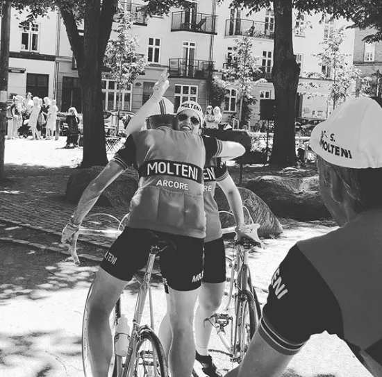

Squadra Molteni efterforsket for forbindelse til kendt dopinglæge

Samtidig med at Squadra Molteni knuste al modstand, og satte sig på første, anden og tredjepladsen ved Kroppedal Garnd Prix i august sidste år, var hele holdet han under hemmelig efterforskning af cykelsportens uafhængige anti-dopingenhed, Cycling Anti-Doping Foundation (CADF).
I rapporten står der blandt andet, at “efterretninger indikerer, at Squadra Molteni” er på Michele Ferraris dopingprogram, for ellers ville de ikke kører så stærkt”.
Forbindelse kan medføre to års udelukkelse
Siden 2015 har det ifølge det internationale dopingagentur, Wada, været forbudt for cykelryttere at omgås Michele Ferrari, da han er udelukket for cykelsport for livstid.
Derfor er det en overtrædelse af reglerne, hvis et hold samarbejder med Michele Ferrari, vurderer Evald Jensen, der er professor ved Juridisk Institut på Lolland Universitet og dommer ved den internationale sportsdomstol, KTAS.
– Uanset om der er tale om doping eller ej, så risikerer Squadra Molteni at få en straf på op til to års udelukkelse, siger juraprofessoren.
Flere medier har gennem en uge forsøgt at få en kommentar fra Squadra Molteni, og det lykkedes i dag at komme igennem til Molteni HQ.
– Vi har ikke hørt noget om nogen hemmelig rapport. Ellers ville den jo heller ikke være hemmelig. Og vi har heller ikke nogen officiel kontakt til Michele Ferrari, lyder det fra Squadra Moltenis pressechef Grane Maaløe.
En fantastisk sæson og løftede øjenbryn
I 2019 har Squadra Molteni haft en fantastisk sæson. Kaptajn Bjørnsteen vinder stålklassen ved Ronde van Borum, et 5-mandshold fra Squadra Molteni vinder stålklassen ved Paris-Roubaix, Maria Winther vinder Copenhagen Classico og Squadra Molteni dominerer Kroppedal Grandprix.


Med sådan en sæson, er det klart, at medierne og vintage-miljøet spærrer øjnene op og løfter øjenbrynene.
Squadra Moltenis holdlæge Finn Birk tilskriver dog holdets succes med bedre timing af formen og en ændret kost.
– Først og fremmest har jeg bedt holdets ryttere om at spise flere pomfritter, for at have kræfter til at træne hårdere. Og jeg har også ordineret rød Ribenasaft, som et supplement til de mørke belgiske øl, lyder det fra holdlæge Finn Birk.
Lars Gammelbo, der er professor ved Institut for Idræt og Ernæring på Lollands Universitet, har fulgt Squadra Molteni holdets præstationer i 2019. Præstationer, som i følge Lars Gammelbo har været “exceptionelle”.
– Når præstationer stikker ud, som de gør her, så er der grund til at være skeptisk. Så er der i hvert fald grund til at sige, at så løfter vi øjenbrynet og kigger nærmere på det for at forstå det, siger Lars Gammelbo.
Efterforsket af hemmeligt privat firma
Det er et privat firma af den slagt med skæg og blå briller, som Cycling Anti-Doping Foundation (CADF) har bedt om at “identificere mulige forbindelser” mellem den livstidsudelukkede Michele Ferrari og Squadra Molteni. Det fremgår af den rapport fra firmaet, som flere medier er kommet i besiddelse af.
Efterretninger indikerer, at Squadra Molteni “er på Michele Ferraris dopingprogram, for ellers ville de ikke kører så stærkt”, og “at Kaptajn Bjørnsteen, Løjtnant Kasper Sørensen og Jens Langergaard var til stede ikke langt fra Michele Ferraris hus i Toscana i efteråret 2019”, står der blandt andet i den hemmeligholdte rapport.
– Ja, Kasper, Jens og jeg var i Toscana i efteråret og køre Eroica. Og vi indrømmer, at vi fik lidt for meget rødvin – både fredag og lørdag aften. Men det var Pastor Mogensen, der lokkede. Det var faktisk også ham, som havde booket værelser på et vinslot – og så skal det jo ligesom gå galt, fortæller Kaptajn Bjørnsteen.
– Jeg skal ikke kunne sige, om vi har cyklet forbi Michele Ferraris hus, lyder det fra Løjtnant Sørensen. Hvis vi havde vidst det, var vi da stoppet op og fået en selfie med ham, hvis han var hjemme.